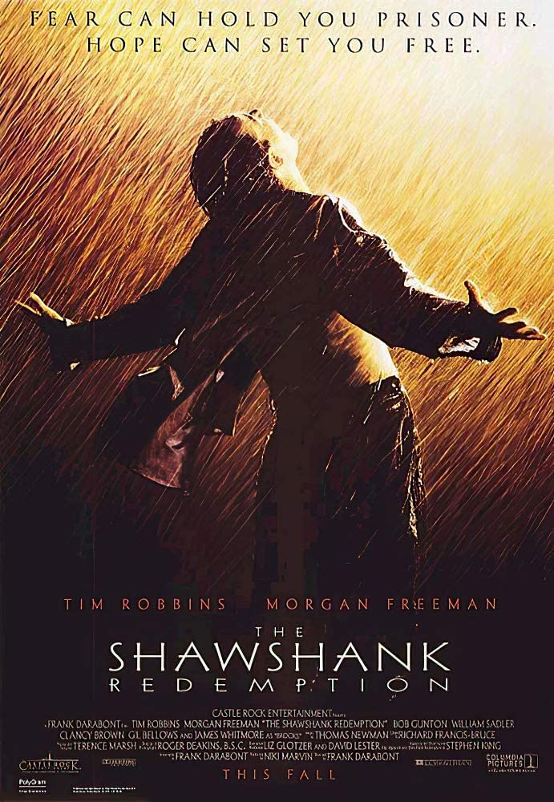

Rebríček najlepších filmov
| poradie | názov filmu | rok vydania | hodnotenie v percentách |
|---|---|---|---|
| 1. | Vykúpenie z väznice ShawshankAndy Dufreson  |
1994 | 95,3 % |
| 2. | Forrest GumpForrest Gump  |
1994 | 94,5 % |
| 3. | Zelená míľaPaul Edgecomb  |
1999 | 92,9 % |
| 4. | SedemDavid Mills  |
1995 | 92,4 % |
| 5. | Prelet nad kukučím hniezdomRandle P. McMurphy  |
1975 | 92,5 % |
| 6. | Schindlerov zoznam | 1993 | 92,3 % |
| 7. | Krstný otec | 1972 | 91,8 % |
| 8. | Dvanásť rozhnevaných mužov | 1957 | 91,4 % |
| 9. | Nedotknuteľní | 2011 | 91,3 % |
| 10. | Pelíšky | 1999 | 91,2 % |
| 11. | Terminátor 2: Deň zúčtovania | 1991 | 90,9 % |
| 12. | Pulp Fiction: Historky z podsvetia | 1994 | 90,7 % |
| 13. | Krstný otec II | 1974 | 90,8 % |
| 14. | Pán prsteňov: Spoločenstvo Prsteňa | 2001 | 90,6 % |
| 15. | Pán prsteňov: Návrat kráľa | 2003 | 90,6 % |
| 16. | Mlčanie jahniat | 1991 | 90,5 % |
| 17. | Vtedy na Západe | 1968 | 90,5 % |
| 18. | Temný rytier | 2008 | 90,4 % |
| 19. | Gran Torino | 2008 | 90,3 % |
| 20. | Matrix | 1999 | 90,2 % |
Top film: Vykúpenie z väznice Shawshank
Mladého a úspešného viceprezidenta banky Andyho Dufresnea (Tim Robbins) v roku 1946 odsúdia na doživotie za vraždu svojej manželky a jej milenca. On sám síce tvrdí, že je nevinný, ale nedokáže to na súde preukázať. Dostane sa do väznice Shawshank, kde sú všetci na doživotie. Dočká sa šikanovania, depresií, tvrdej práce, ale postupne sa adaptuje a spriatelí sa s Redom (Morgan Freeman), černošským väzňom, ktorý ako jediný priznáva, že je vinný. Po nejakom čase pomôže Andy jednému dozorcovi vyriešiť problém s daňovým priznaním. A netrvá dlho a stane sa vyhľadávaným daňovým poradcom nielen všetkých dozorcov, ale predovšetkým riaditeľa väznice, pokryteckého a zákerného Nortona (Bob Gunton). S Andyho pomocou rozbehne Norton neuveriteľné finančné machinácie a podnikateľské aktivity, na ktorých fantasticky zarába. Andy sa tak stane prominentným väzňom. Nečakaný obrat nastane vo chvíli, keď jeden z nových väzňov, mladý Tommy, rozpráva Andymu o človeku, s ktorým sedel v inej väznici, a ten sa priznal, že zavraždil Andyho ženu a jej milenca. Andy chce okamžite obnoviť svoj proces, ale narazí na tvrdý odpor riaditeľa Nortona. Ten si nemôže dovoliť o Andyho prísť, ale nielen pre svoje kšefty, ale ja zo strachu, že Andy by mohol na slobode prehovoriť o riaditeľových podvodoch. Andy sa tak znovu ocitne na dne, ale nie je taký hlúpy, ani bezmocný, ako si Norton myslí. Dokáže totiž využiť svoje schopnosti finančného poradcu najmä pre seba, a tak má teraz v rukách kľúč k veľkému majetku. Po celý čas si tiež tajne kope dieru, aby z väznice ušiel...